ş
ƙ
售后公告
Ő
首页
Ɔ
商品分类
ŭ
购物车
Œ
会员中心
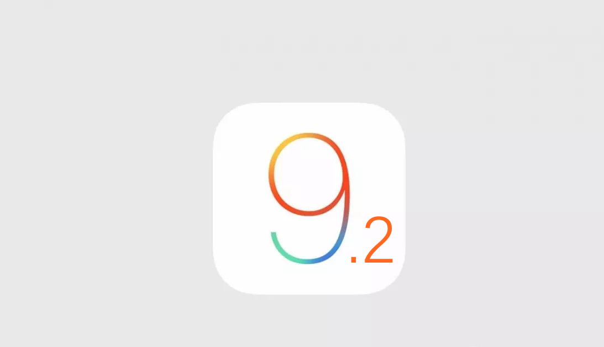
【三九技术】iOS9.2正式版发布，升级过硬盘也可放心更新
12月9日凌晨，苹果推送了iOS 9.2正式版，从这次更新修复的内容来看，密密麻麻的一大版，似乎还是解决了不少问题的。其中iOS 9.2正式版系统版本号仍然为“13C75”,与此前的Beta 4公测版完全一致。
ƒ
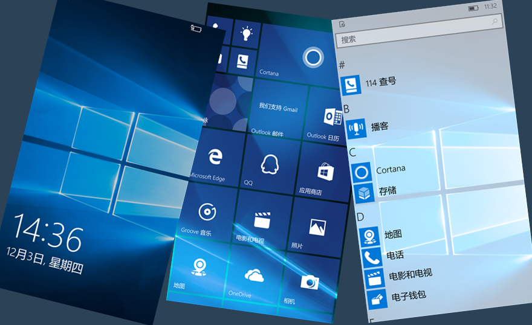
【三九技术】老骥伏枥，除了MIUI7小米4还能用Windows10？
666，你是看了标题才进来的吗？NO，小编可不是标题党，小编这次以身试水亲自做了回小白鼠才有此勇气告诉你们“小米4除了MIUI7还可以使用Windows10 Mobile”。
ƒ
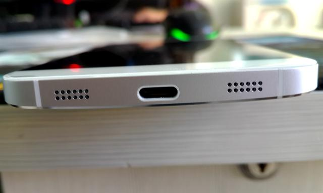
【三九技术】闪充、盲插「USB Type C接口详解」
2013年12月，USB 3.0推广团队公布了下一代 USB Type-C 连接器的渲染图，随后在2014年8月开始大规模量产，USB Type C聚齐诸多优势，从出生就注定不平凡。
ƒ
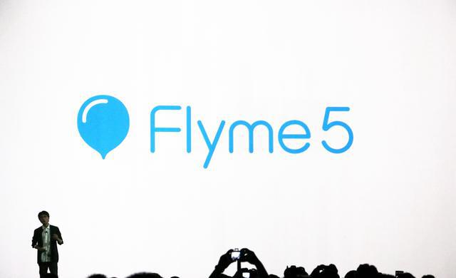
【三九技术】可能是目前最全面的「Flyme5体验」
Flyme是魅族基于Android操作系统为旗下智能手机量身打造的操作系统，旨在为用户提供优秀的交互体验和贴心的在线服务。Flyme5以尊崇自然风格的设计思路为纲，重新规整了思路，让视觉细节犹如大自然般，平静而富有生命的灵动。明亮的色彩、恰到好处的圆角、逻辑清晰的动画跃然纸上，这就是全新的Flyme5系统。
ƒ
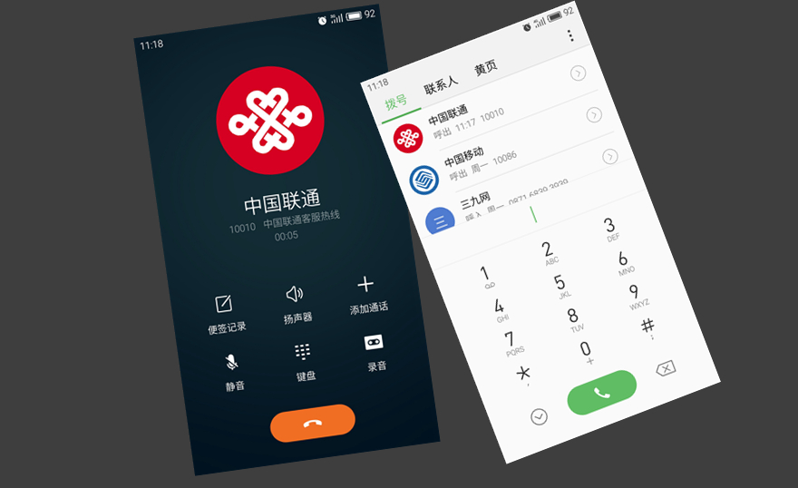
【三九技术】VoLTE技术-4G通话再也不必滚回3G
目前使用4G手机通话时必须回落到2G/3G网络，而鸡肋的4G网络仅支持上网，无法用于通话，VoLTE技术将解决这一问题。
ƒ
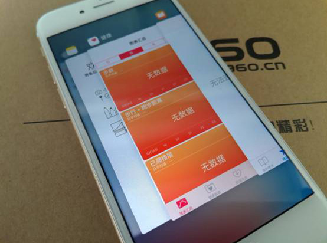
iOS 9.0.1小幅更新提升，运行更流畅
9月17日，苹果发布了iOS 9正式版固件更新，但却暴露了诸多问题，今日凌晨苹果推出了iOS 9.0.1版本更新。
ƒ
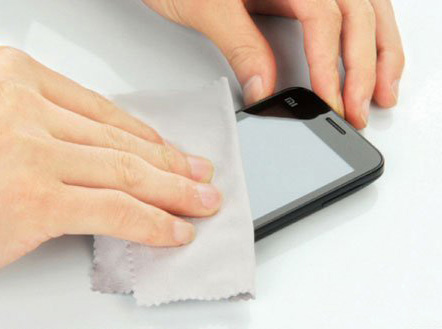
手机保养及常见问题汇总
手机虽说只是身外之物，但是还是有必要好好保护一下的，常见的误区有哪些呢，我们一起来看看吧。
ƒ
十个实用技巧 让你用手机轻松拍出好照片
总是觉得自己手机拍照效果不好，不要怪手机不好，想想这些原因。
ƒ
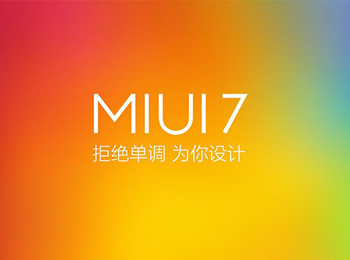
【MIUI 7】MIUI 7新特性大揭秘 三九手机网免费帮您升级
MIUI 7正式发布之后，引起了巨大的争议。目前，小米官方已经发布了MIUI 7的升级包，那么，它究竟有什么令人激动的新特性？值不值得升级呢？
ƒ
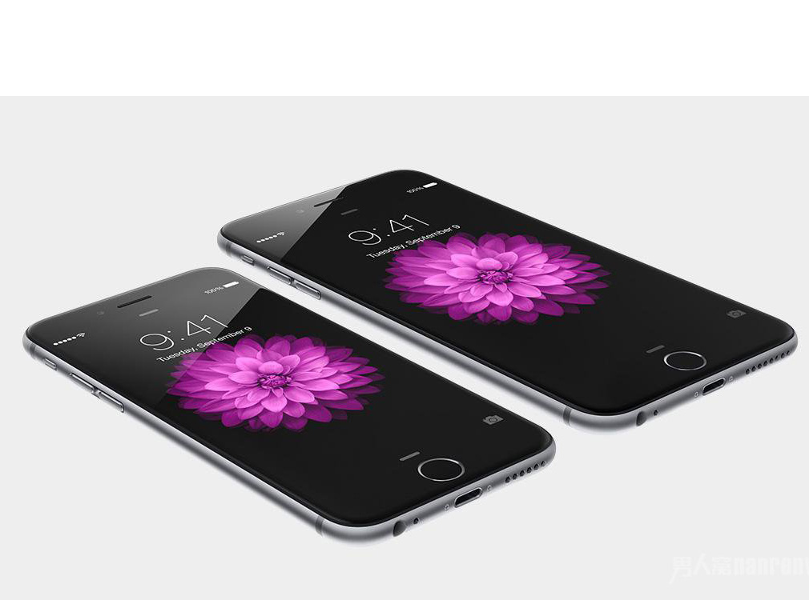
【技术】iOS8越狱终结者，苹果发布iOS8.4.1更新
2015年8月14日凌晨，苹果正式推送了iOS 8.4.1版本更新，本次更新并没有重大的改进，但却封堵了iOS8.4之前的越狱漏洞，更新后将无法越狱。
ƒ
苹果设备连接WIFI跳转到Apple官网问题分析解决
近期有用户反馈苹果手机连接WIFI出现一些问题，无法打开页面连上WIFI，返回的话就取消连接，经过三九手机网工程师的排查，终于解决啦！
ƒ
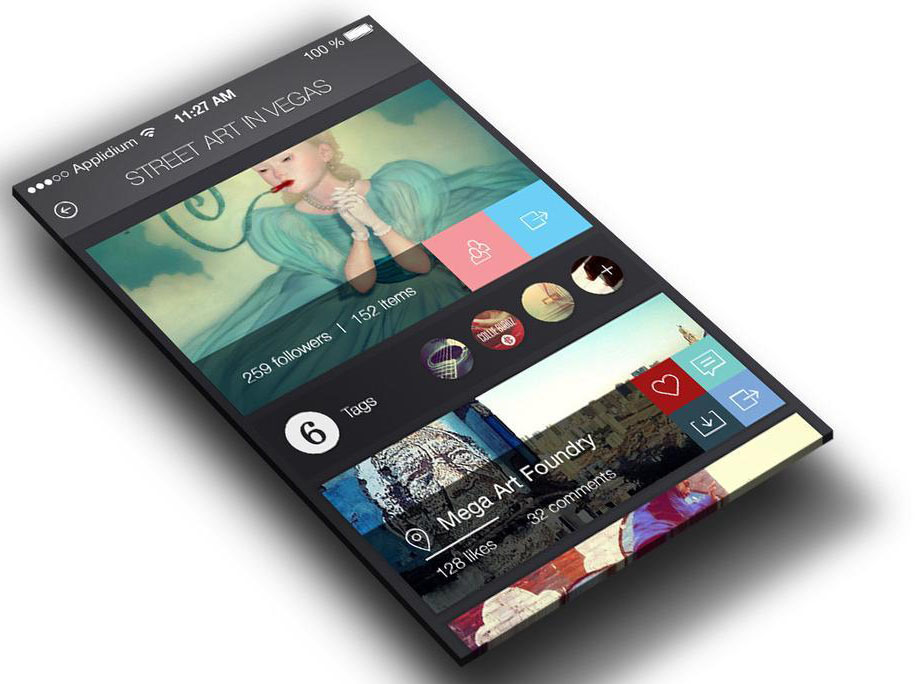
详解手机普通屏幕和2.5D，3D屏幕的区别
科技日新月异，手机屏幕的发展也天天不同，这里小九总结了市面上主流的三种屏幕，大家快来补充下知识吧。
ƒ
夏季，如何更有效的清洁、维护手机屏幕
手机作为我们日常生活中使用最多的东西，卫生问题不容小觑，这里小九就交大家一些保护屏幕的方法吧！
ƒ
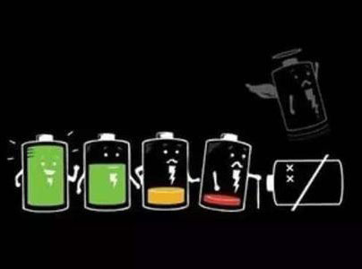
五个实用技巧，节约Android设备流量
夏天这么热，手机电池用起来也是奔放如火，如果不想天天回家充电，快看这里！
ƒ
wifi信号好上网慢?不怕，有方法
没有wifi信号的地方是地狱，那wifi信号满格但是网络龟速是什么，这叫生不如死，快来学习一下怎么解决这个问题吧。
ƒ
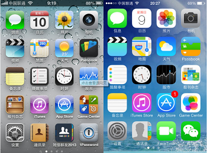
iPhone4S 8.3降级6.1.3？然并卵…
很多怀旧的iPhone用户都有一个困扰，就是系统版本只能升级无法降级，近日就有大神放出降级工具，但是我们真的需要降级吗？小编今天就为你对比一下利弊。
ƒ
阿拉伯代码短信导致IOS 8设备短信闪退解决方法
最近，一则阿拉伯代码的短信，会造成苹果设备出现短信闪退，着实让人伤脑筋。那么，如何解决它呢？
ƒ
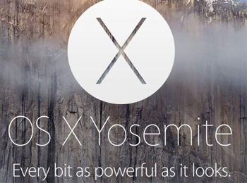
MAC OS X下如何隐藏和取消隐藏已购项目
OS X下如何隐藏以及取消隐藏已购项目？一起来学习一下吧！
ƒ
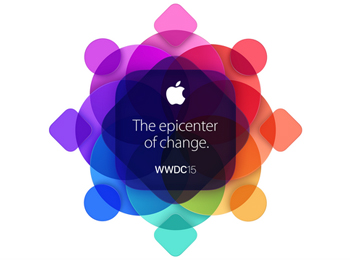
【三九技术】WWDC 2015亮点全解析
北京时间2015年6月9日凌晨，WWDC 2015（苹果全球开发者大会）如期举行，本次开发者大会带来诸多亮点。下面，就一起来回顾一下吧！
ƒ
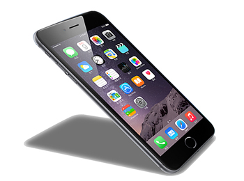
iPhone一键查余额
对于大价钱买回来的iPhone来说，如果别人不提及，很可能一辈子都不知道它还有很多隐藏技巧。如果你花心思去挖掘这些技巧，会给你生活或者工作上的使用带来不少的方便。下面小编就向大家介绍如何用iPhone一键查询话费余额，真的是一键拨打的哦。
ƒ
加载更多
您当前使用的是2G/3G网络，现在就免费升4G >>
首页
商品分类
购物车
我的